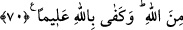

ALLÂH’A VE RASÛLÜNE İTÂAT
64- Biz her peygamberi –Allah’ın izniyle- ancak kendisine itâat edilmesi için
gönderdik. Eğer onlar kendilerine zulmettikleri zaman sana gelseler de Allah’tan
bağışlanmayı dileseler, Rasûl de onlar için istiğfar etseydi Allah’ı ziyâdesiyle
affedici, esirgeyici bulurlardı.
65- Hayır, Rabbine andolsun ki aralarında çıkan anlaşmazlık husûsunda seni
hakem kılıp sonra da verdiğin hükümden içlerinde hiç bir sıkıntı duymaksızın tam
mânâsıyla kabullenmedikçe îmân etmiş olmazlar.
66- Eğer onlara, kendinizi öldürün yâhut yurtlarınızdan çıkın, diye emretmiş
olsaydık, içlerinden pek azı müstesnâ bunu yapmazlardı. Eğer kendilerine verilen
öğüdü yerine getirselerdi, onlar için hem daha hayırlı hem de (îmânlarını) daha
pekiştirici olurdu.
67- O zaman elbette kendilerine nezdimizden büyük mükâfât verirdik.
68- “Ve onları dosdoğru bir yola iletirdik.”
69- Kim Allah’a ve Râsûl’e itâat ederse işte onlar, Allah’ın kendilerine lütuflarda
bulunduğu peygamberler, sıddîklar, şehidler ve sâlihlerle berâberdir. Onlar ne güzel
arkadaştır!
70- Bu lütuf Allah’tandır. Bilen olarak Allah yeter.